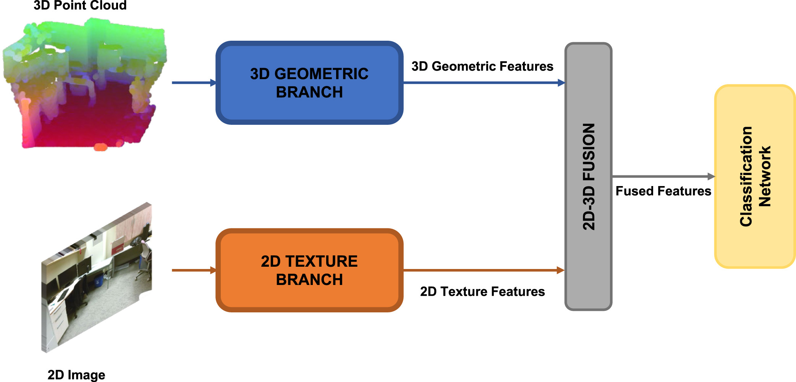
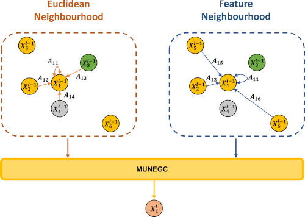
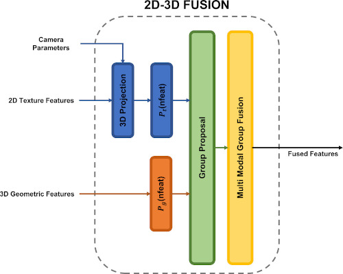

2D-3D Geometric Fusion Network using Multi-Neighbourhood Graph Convolution for RGB-D Indoor Scene Classification


Universitat Politècnica de Catalunya
introduction
Multi-modal fusion has been proved to help enhance the performance of scene classification tasks. This paper presents a 2D-3D Fusion stage that combines 3D Geometric Features with 2D Texture Features obtained by 2D Convolutional Neural Networks. To get a robust 3D Geometric embedding, a network that uses two novel layers is proposed. The first layer, Multi-Neighbourhood Graph Convolution, aims to learn a more robust geometric descriptor of the scene combining two different neighbourhoods: one in the Euclidean space and the other in the Feature space. The second proposed layer, Nearest Voxel Pooling, improves the performance of the well-known Voxel Pooling. Experimental results, using NYU-Depth-V2 and SUN RGB-D datasets, show that the proposed method outperforms the current state-of-the-art in RGB-D indoor scene classification task.
If you find this work useful, please consider citing:
Albert Mosella-Montoro, Javier Ruiz-Hidalgo, 2D-3D Geometric Fusion network using Multi-Neighbourhood Graph Convolution for RGB-D indoor scene classification, Information Fusion, 2021, ISSN 1566-2535, https://doi.org/10.1016/j.inffus.2021.05.002
@article{MOSELLAMONTORO2021,
title = {2D-3D Geometric Fusion network using Multi-Neighbourhood Graph Convolution for RGB-D indoor scene classification},
journal = {Information Fusion},
year = {2021},
issn = {1566-2535},
doi = {https://doi.org/10.1016/j.inffus.2021.05.002},
url = {https://www.sciencedirect.com/science/article/pii/S1566253521001032},
author = {Albert Mosella-Montoro and Javier Ruiz-Hidalgo},
}
Check our paper here.
Method
The proposed network is composed of two branches: the 3D Geometric branch and the 2D Texture branch. The 3D Geometric
branch is composed of two novel layers named Multi-Neighbourhood Graph Convolution (MUNEGC) and Nearest Voxel Pooling.
The input of this branch is a 3D point cloud that can be obtained directly from a lidar sensor or using the
depth information and the intrinsic camera parameters of an RGB-D sensor. Each node of the 3D input point cloud encodes
the depth information using the HHA encoding. HHA encodes the depth into a 0 to 255 range with three channels.
Each channel represents horizontal disparity, height above the ground, and the angle with the inferred gravity direction.
The 2D Texture branch uses as a backbone the well-known architecture ResNet-18. The input of this branch is a 2D RGB image
corresponding to the same capture as the capture used on the 3D Geometric branch.
After the corresponding branches, the extracted 3D Geometric and 2D Texture features are fused using the 2D–3D Fusion stage,
and the result of this stage is used by the Classification network to predict the corresponding scene class. The
proposed network is depicted in the following picture:

The main contributions of this paper are:
The proposal of the Multi-Neighbourhood Graph Convolution operation, that takes into consideration the neighbours
of the centre point in Feature and Euclidean spaces.

The Nearest Voxel Pooling algorithm, which consists of an improved version of the current Voxel Pooling algorithm
that mitigates the noise introduced by sensors.
The fusion of 2D-3D multi-modal features through the proposed 2D-3D Fusion stage. Using geometric proximity allows
the network to exploit the benefits of 2D and 3D Networks simultaneously.

Results
| Mean Acc(%) | |||
|---|---|---|---|
| Method | RGB | Geometric | Fusion |
| Multi-modal fusion | 40.4 | 36.5 | 41.5 |
| Effective RGB-D representations | 44.6 | 42.7 | 53.8 |
| DF²Net | 46.3 | 39.2 | 54.6 |
| MapNet | - | - | 56.2 |
| TrecNet | 50.6 | 47.9 | 56.7 |
| Ours | 56.4 | 44.1 | 58.6 |
| Mean Acc(%) | |||
|---|---|---|---|
| Method | RGB | Geometric | Fusion |
| Effective RGB-D representations | 53.4 | 56.4 | 67.5 |
| DF²Net | 61.1 | 54.8 | 65.4 |
| MapNet | - | - | 67.7 |
| TrecNet | 64.8 | 57.7 | 69.2 |
| Ours | 67.8 | 59.2 | 75.1 |
code


acknowledgements
This research was supported by Secretary of Universities and Research of the Generalitat de Catalunya and the European
Social Fund via a PhD grant to the first author (FI2018), and developed in the framework of project TEC2016-75976-R,
financed by the Ministerio de Economía, Industria y Competitividad and the European Regional Development Fund (ERDF).